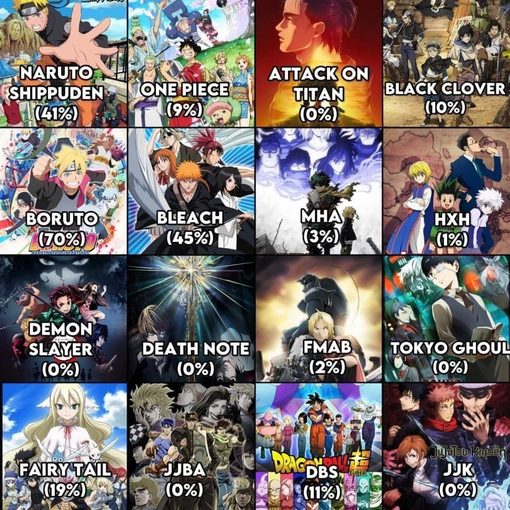

원작 만화에는 없는 애니 제작진이 설정 짠 스토리 = 오리지널

원작 만화에는 없는 애니 제작진이 설정 짠 스토리 = 오리지널
뭘 기준으로 비율을 잡은 거지? 시간?
화 단위일듯
나루토가 유독 오리지널 에피소드가 많았지 사스케 탈주 - 질풍전 사이 이야기 말고도 하급닌자 시절부터 조금씩 있었던 것 같음
데스노트가 0%는 아니지않나?
아 엔딩 조금 다른거 빼곤 거의 그대로 아닌가 뭐라 다른게 있던다
블리치는 작가참여라 준공식 아님?ㅋㅋㅋㅋ
바운트의 목적을 알기 위해서는 자네의 동의 어쩌고...
크아아악
바운트가 준공식이라고?
미안하군... 나라서
쿠보가 본격적으로 블리치 애니 참여한 건 천년혈전 편부터임.
그전에 2000년대 방영했던 오리지널 편들(바운트편 같은거)는 사실상 애니 제작진 순수 오리지널이었고, 그래서 설정붕괴도 많고 캐릭터 디자인도 요상했지. 더군다나 원래 만화책 내용도 애니에서 대사 달라지거나, 연출 달라진 게 많아서 쿠보가 블리치 애니메이션 존나 싫어했다고 함.
그래서 천년혈전 애니 편부터는 아예 적극적으로 참여했다고 하고.
바운트의 진실을 알려주지
강연금 브라더후드에 오리지널이 있어?
그러게
1화에 나오는 얼음 쓰는 연금술사 오리지널캐릭임 만화엔 안나옴
그렇네 원작은 그 사이비 교주 부터지.
빙결의 연금술사랑 대화만 했어도 50화 분량 스킵 쌉가능이었건만 ㅋㅋㅋ
요키 에피소드도 다짤리고 간추려졌음
그것도 오리지날이라고 하면 오리지널이지
나루토는 ㄹㅇ 볼때마다 이상한 스토리였음 ㅋㅋ
애니마다 다르긴하지만 보통 애니가 원작을 따라잡아서 시간벌이용 ㅋㅋㅋㅋ
애니 오리지널이 제일싫어
나루토 보루토 쌍으로 지랄이네 ㅋㅋ
나루토 ㅈ같긴한데 그래도 인주력들 스토리는 괜찮았어
드래곤볼 슈퍼 말고 본편이 궁금하네
본편이 늘이기 갑인데
본편은 안늘이고 기합 한번을 3화로 늘림
애니가 원작 연재를 따라잡으려고 할 때마다 딴 길로 돌아가게 하는거라는데 원피스 볼 때 좀 빡쳤다
보루토는 시작부터 다르던디 ㅋㅋㅋ
폭시 해적단의 데비 백 파이트가 정사라고?
드볼 슈퍼는 애니가 코믹스 보다 메인 스토리 진행이 훨씬 빨라서.....
옛날 드래곤볼 애니 몇화째 기만모음
블리치는 오리지널 없었는데;;;;
쿠보가 경화수월에 걸려서 못그린거지
블리치는 풀브링편도
오리지널로 넣었냐ㅋㅋㅋㅋ
나루토는 애니로 본 사람 만화로 본 사람이 같은 작품 봤다고 할 수 있을까 ㅋㅋ
도쿄구울은 루트 아오기리 해서 중간 진행 조금 바꾸고 도쿄구울re가서는 스토리 라인 축약도 엄청해서 애매
개씨발 나루토 오리지널 에피 문제가
사건 생기면 뭐 그냥 투닥투닥 하다가 나루토 나선환 박고 하하하 하고 끝남
한 5편 보고 폐사 해버려서 그 이후 애니도 안보게되더라
예전에는 저거 인기 척도이긴 했음
만화가 인기가 많아서 빨리 애니화 되고 후딱후딱 만들어버리니 애니가 만화 스토리 진행 다 따라와버리면 시간벌이용으로 오리지널 에피소드 넣는거 말고는 답이 없으니
코난은 한 95%정도될듯